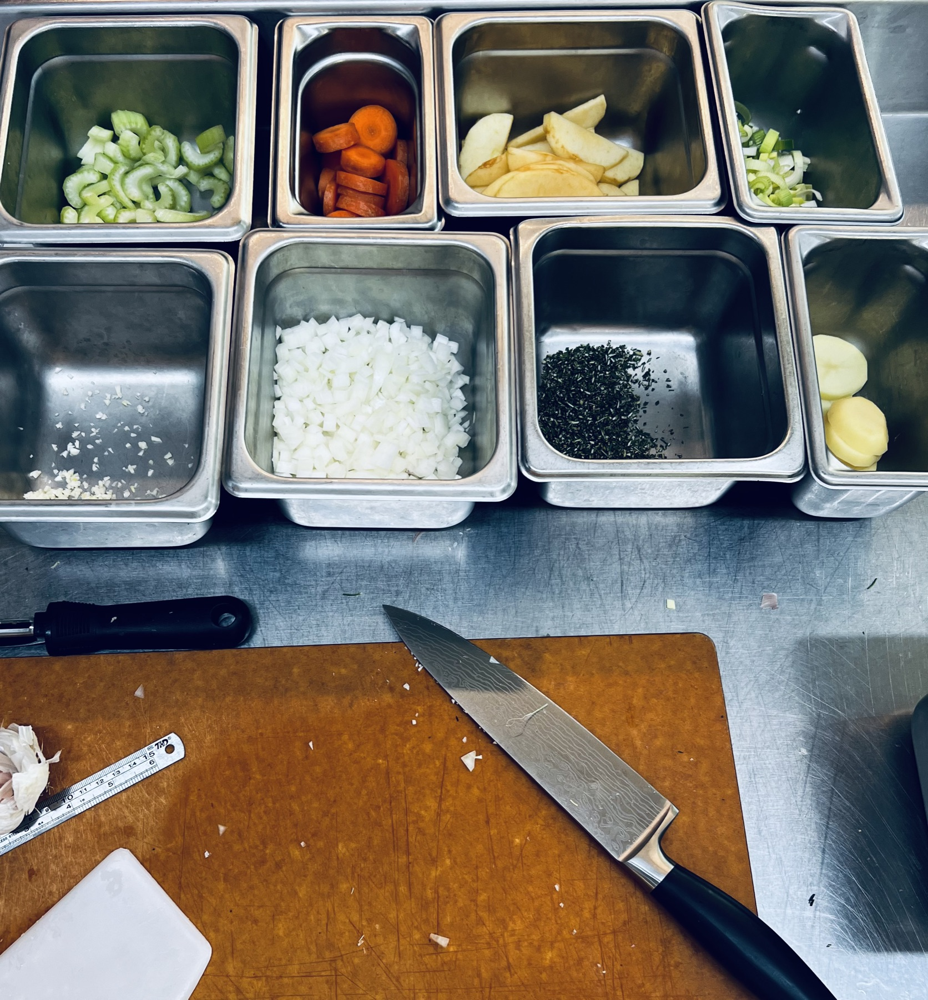
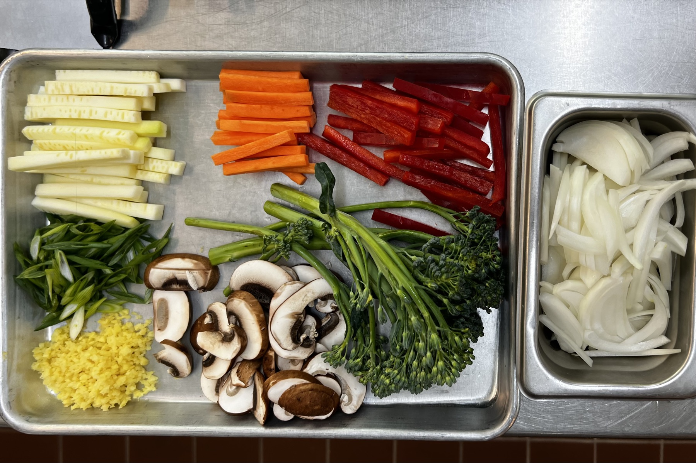
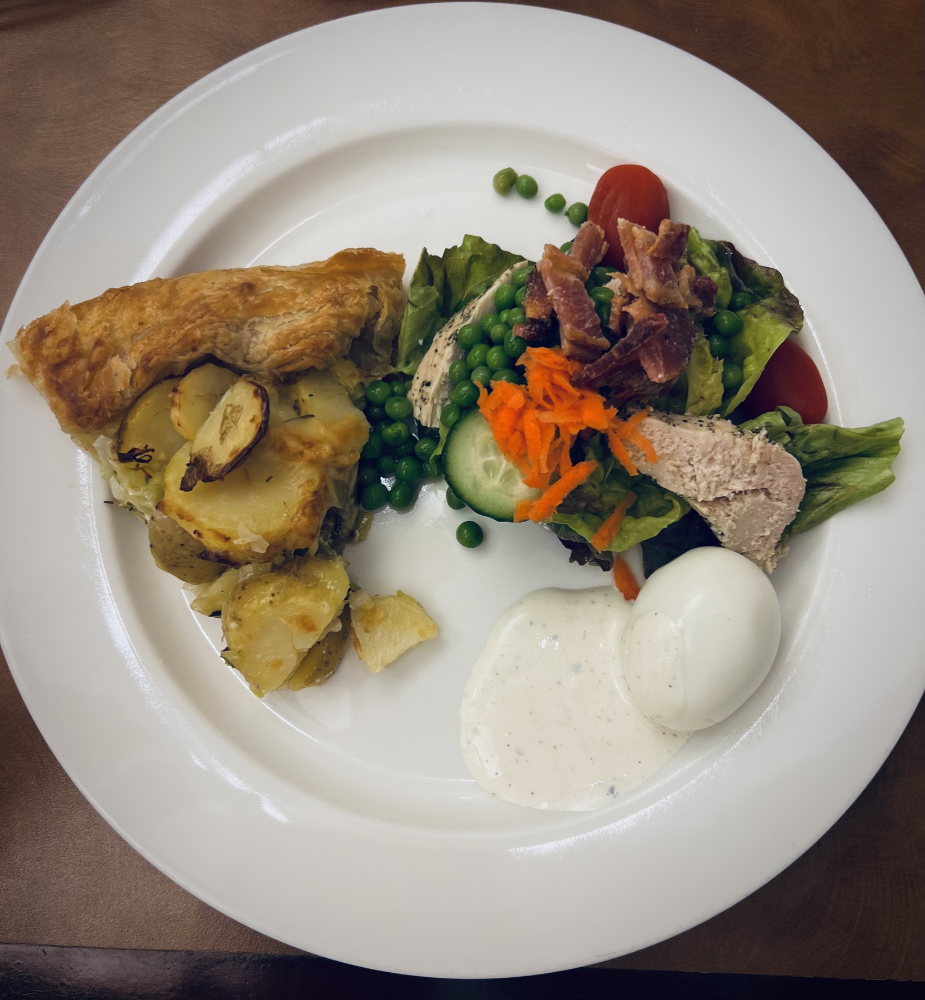
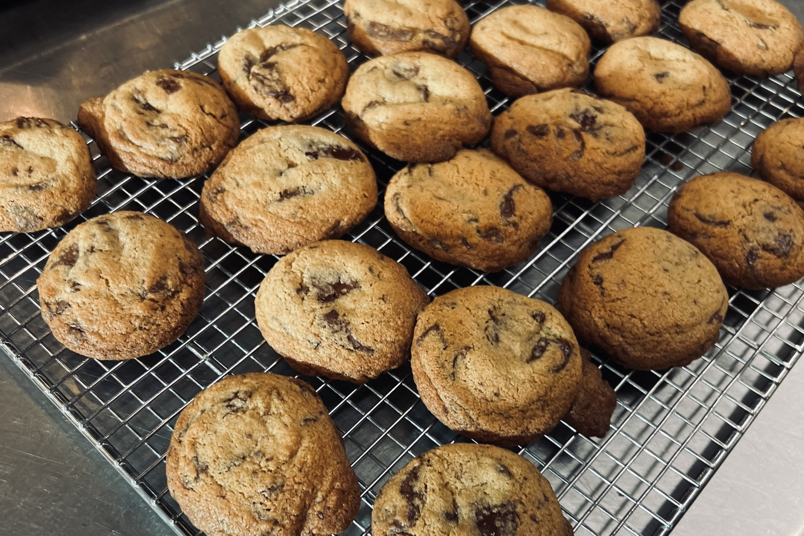

Learning to Work
Week two is when it started to feel real.
Not because we suddenly got better, but because there was more to manage and less time to think about it. The pace picked up. There were expectations now.
We started with knife cuts.
Not just cutting vegetables, but cutting them correctly and consistently. Apples sliced thin and even. Carrots into rondelles. Onions into a small dice that actually measures out. Leeks in clean half-moons. Garlic and rosemary minced fine.
It sounds simple until you're doing all of it at once, trying to stay organized and not fall behind.
This was the first time it really clicked that precision matters. Not just for presentation, but for how food cooks. If your cuts aren't consistent, nothing cooks evenly. If nothing cooks evenly, the dish doesn't come together the way it should.
Day 1 cuts (4/6): apple sliced ⅛ inch, celery bias cut, potato rondelle ¼ inch, carrot rondelle, leek half-moon ⅛ inch, yellow onion small dice ¼ inch, rosemary minced, garlic minced.
Day 2 cuts (4/7): scallion bias cut, ginger minced, carrot batonnet ¼ x ¼ x 2½ inches, bell pepper batonnet, zucchini batonnet, onion julienne ⅛ inch, mushrooms prepped, cauliflower and broccolini broken into florets, cauliflower or broccolini blanched.


Mise en Place
Mise en place started to feel real this week.
Station set. Tools in place. Sani bucket ready. Towels where they belong. Product prepped and organized before cooking even starts.
If something is missing or out of place, you feel it immediately. You slow down. You get behind.
You start to understand that organization isn't about being neat — it's about being able to work efficiently under pressure.
The Scullery
I was assigned to the scullery this week.
It's not the station people get excited about. You're washing dishes, managing equipment, and keeping everything moving so the rest of the kitchen can function.
It's constant.
If you fall behind, everyone feels it. If you stay on top of it, things run smoother for everyone.
It made me pay attention in a different way. Anticipating what people need. Keeping pans moving. Staying organized even when it gets busy.
It's not flashy work, but it matters.
Vegetable Stock
We also made vegetable stock this week — French and Asian variations. Both use the same method: vegetables and aromatics into cold water, simmered 45 minutes to an hour, then strained.
The French version is straightforward: onion, leek tops, carrot, celery, garlic, parsley, thyme, peppercorns, bay leaf. Clean and neutral. The Asian version swaps in scallion, ginger, cilantro, shiitake stems, and optional kombu for a deeper, more aromatic base.
First Family Meals
We made our first real family meals this week.
Potato and leek galette. Then pan-fried Shanghai noodles with sautéed vegetables.
This was the first time everything came together. Knife work, prep, timing, cooking, and then actually sitting down to eat something we made as a group.


The noodles stood out. High heat, moving quickly, balancing aromatics like ginger, garlic, and scallion. Tasting and adjusting as you go.
It wasn't perfect, but it worked.
Potato and Leek Galette →
Pâte Brisée →
Shanghai Pan-Fried Noodles →
Chocolate Chip Cookies
I made chocolate chunk cookies for the class.
Simple recipe, but still all about execution. Creaming butter and sugar properly. Not overmixing. Pulling them at the right time so the centers stay soft and the edges set.
They came out golden with soft centers and crisp edges, finished with a little salt.

It was one of the first things I've made in class that I felt confident serving to other people.
Week one was about understanding the kitchen. Week two was about starting to work in it.
Still early, but I'm learning how to work — and that's starting to show.